肤色与妆面
新手在 VRoid 里做赛璐璐
约 19 分钟，界面是 VRoid Studio 1.10.0。右侧一直叠着作者自己的狐狸耳参考图，会挡住一部分滑杆，下面只写画面上能读全的数。口播说不用 Clip Studio 或 Photoshop，整段也没有打开外部绘图，没有导出。
皮肤
先把边缘光和自动阴影收掉
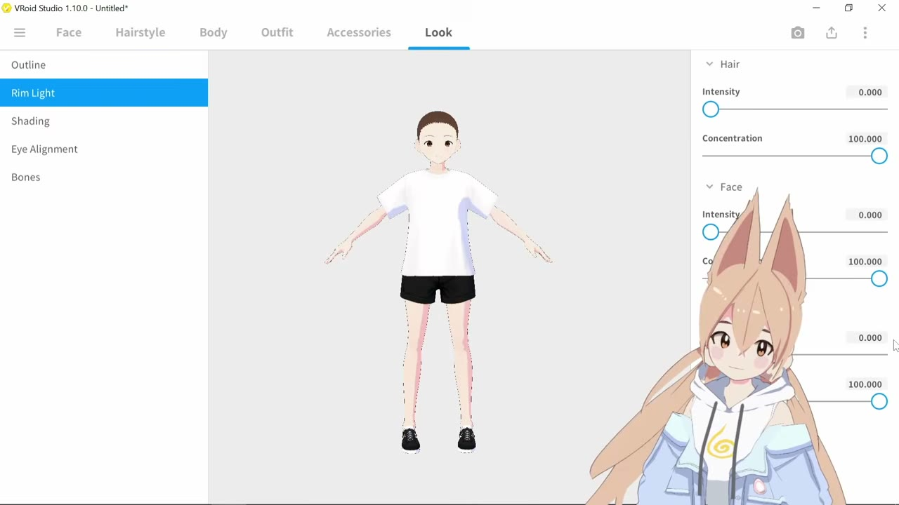
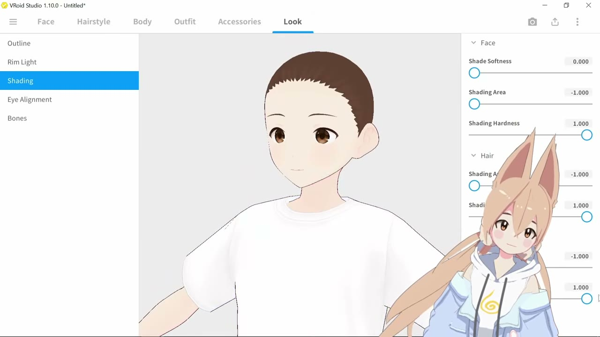
口播说默认边缘光不好看，自动阴影也先拿掉，阴影要自己画。Look → Rim Light 里，头发和脸的 Intensity 都推到最左，读数 0.000，Concentration 还停在最右。接着打开 Shading，把脸的 Shade Softness 放在 0.000，Shading Area 拉到最左 -1.000，Shading Hardness 拉到最右 1.000。脸上的软渐变会收成很窄的一块。这一帧白 T 恤上看不出另外一块灰影。头发和再往下的两组读数是同一套方向，名字没露全，不要照着猜。
皮肤涂成一块浅色
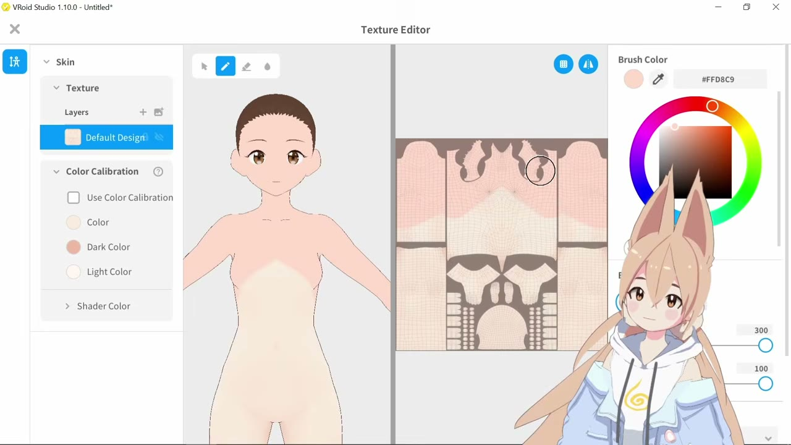
口播说先把默认衣服从贴图上擦掉，只留干净的纯色，不要那些花纹皮肤。进到这一帧时人已经是素体。在身体皮肤的贴图编辑器里，选 Default Design，不要勾 Use Color Calibration。笔色调到很浅的桃 #FFD8C9，在右侧身体 UV 上整片铺开。铺完胸口和肚子的默认纹理没了，变成一块平的浅色，脖子和四肢还没涂到的地方会深一点。
眼睛
眼白先涂平
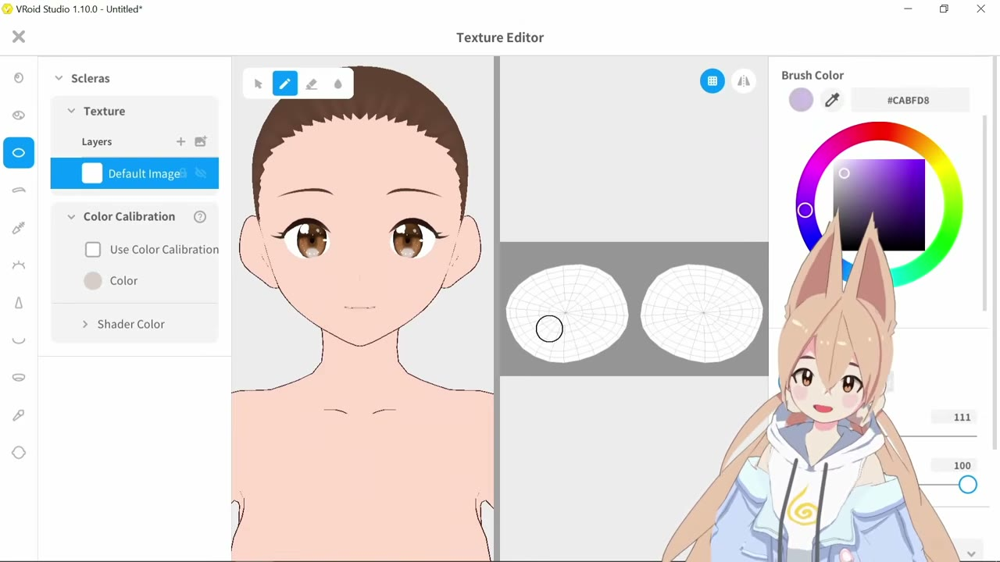
口播说眼白要干净，先做成平的，把妆感去掉。打开眼白贴图，用偏灰的淡紫 #CABFD8 在线框上涂。这一帧默认的深色眼白已经被盖掉，正面眼睛还是棕色，但眼白上的灰渐变淡了。校色保持关掉。
虹膜分成深浅两截
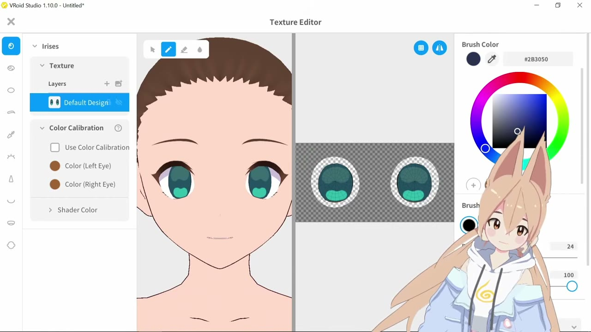
口播说瞳色用蓝、青绿、紫或棕都行，这次先沿虹膜圈一圈深色，下面留一块更亮的海泡绿，再勾边。画在 Irises 的 Default Design 上，不要勾 Use Color Calibration。这一帧上半是深的蓝绿，下半是亮青绿，笔还停在深蓝 #2B3050。左边 Color (Left Eye)、Color (Right Eye) 的色块仍是棕色，那两个圆没有跟着贴图变，眼睛的颜色是画上去的。口播说眼高光要等虹膜画完再加，这段没有单独停在画完的高光层上。
五官
鼻子只留一点高光
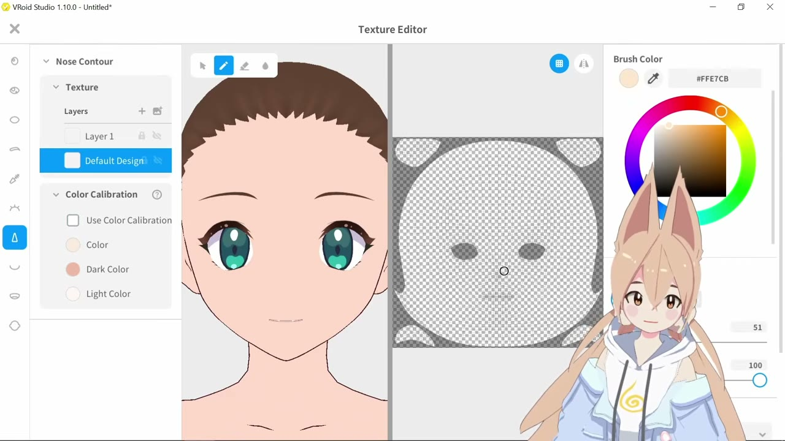
口播说把默认鼻子擦掉，再用比脸更浅的颜色在鼻头点一块高光，因为鼻子还在，只是正面几乎看不见。这一帧已经回到笔刷，校色没开，#FFE7CB 点在鼻尖 UV 上。正面鼻梁是平的，鼻头只有很小一块亮。
口腔分出深浅
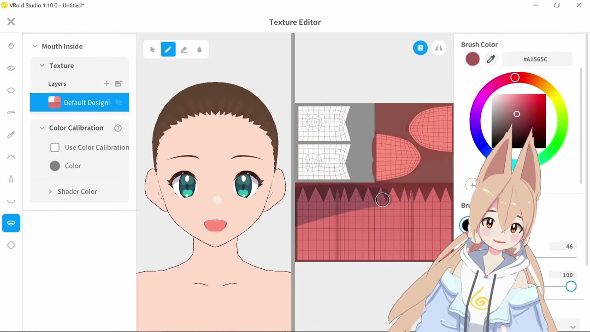
口播说先把嘴张开才能看见里面。动漫嘴用偏橙的红，两层深浅都要有，口腔里面再压深，舌头下面也涂上，才不像一块平面。这一帧嘴已经张开，正在用 #A1565C 涂下排牙齿附近。上半口腔是更浅的粉，下面一排牙齿被暗红盖住一块。校色没勾。
脸收圆
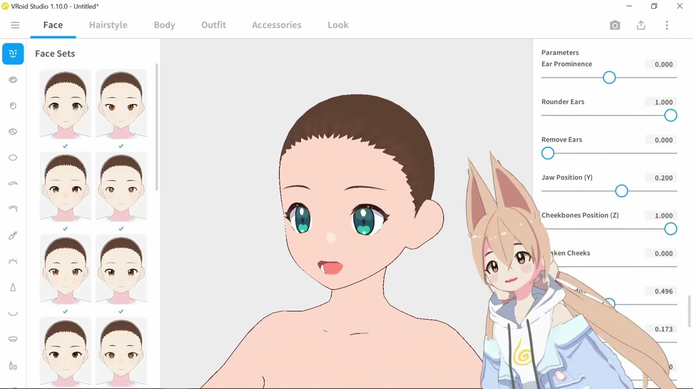
口播说把脸做得又圆又可爱，把下巴的尖角藏起来，耳朵太大就收一收。Face Sets 里 Rounder Ears 拉到最右 1.000，Remove Ears 仍是 0.000，耳朵还在，只是更圆。Jaw Position (Y) 停在 0.200，下巴略往下。Cheekbones Position (Z) 拉到最右 1.000，脸颊往前。Ear Prominence 保持 0.000。侧脸这时鼻梁已经很平；口播在找鼻子尺寸，这一帧的面板不在那一项上，不记读数。
眉毛重画一笔
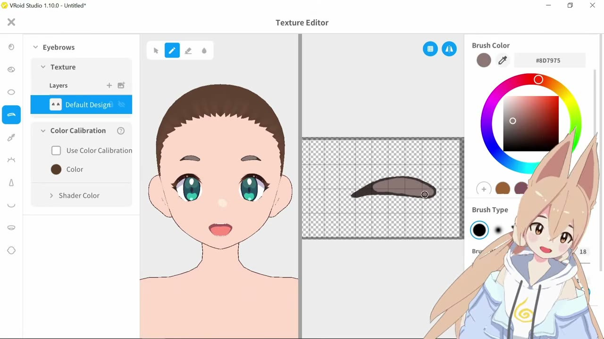
口播说眉可以不动，自己喜欢粗一点、里面加排线。这一帧是在空的眉毛 UV 上重新画：一笔灰棕 #8D7975，眉头粗、眉尾收尖。脸上的眉看起来偏细、偏平，UV 里没有分开的排线。校色没勾。
上眼皮留一条细线
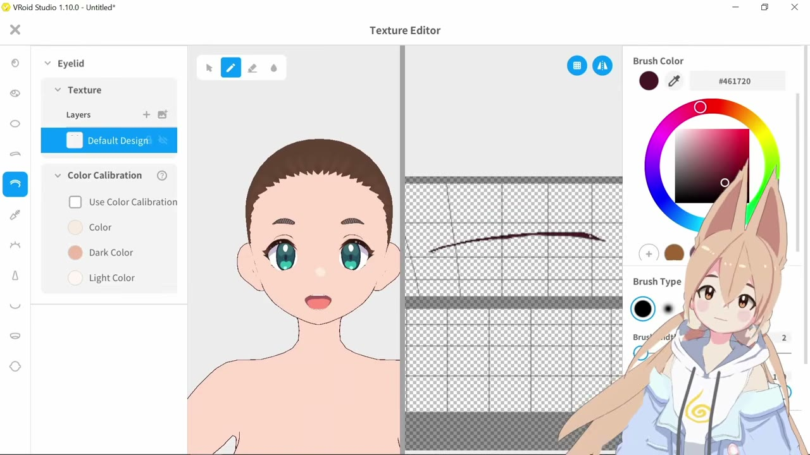
口播说眼睑用深色，画脏了就擦掉再沿着边走，这层颜色后面会拿去当阴影色。这一帧上眼皮只留一条很细的深褐线 #461720，笔宽收到 2。脸上眼线贴着睫毛根。后面手绘阴影用的是更浅的粉，并不是这一条的色号。
头发
在现成发型上找阴影边
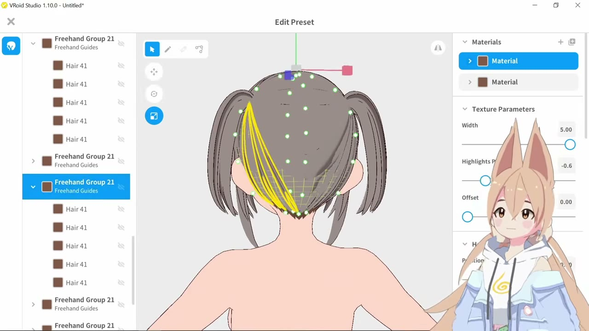
口播说直接改一组现成发型，不从零生发。刘海先抬上去，露出眉毛。材质里不需要的贴图勾去掉，换成一块纯色，再把花纹擦掉。然后一束一束找阴影落点：从中间往外，找边缘被挡住的那一段；赛璐璐头发要少、要块，多余的发束删掉。这一帧是背面，正在改其中一束：Width 拉到 5.00，高光位置在 -0.6，Offset 停在 0.00。头发已经是一块灰，不是默认的棕渐变，马尾上能看见分成几段的硬边。
头发框住脸之后再收眼睛
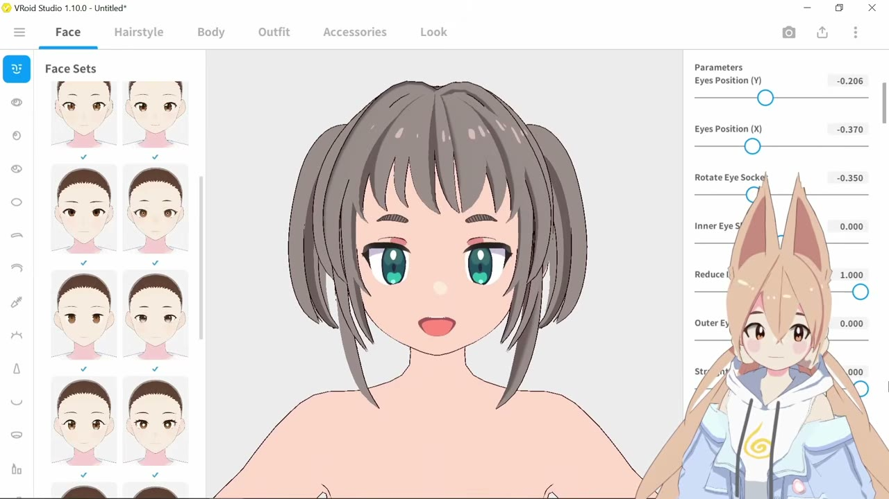
口播说头发会把脸框住，所以发型定了还要回来改脸，不同发型要配不同的脸。这一帧刘海和两侧头发已经压住眼角。眼睛往下、往中间收：Eyes Position (Y) -0.206，Eyes Position (X) -0.370，Rotate Eye Socket -0.350，眼窝略转向。一边眼睛看起来更眯一点。口播说这样有点无聊、又有点调皮。被挡住的滑杆名字没有补全。
手绘阴影
沿着发际画一圈浅粉
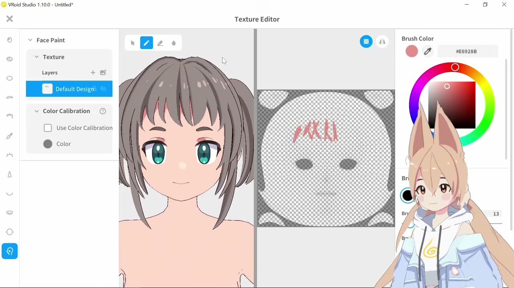
口播说最重要的一步是自己假装有阴影：取一个颜色，沿着头发的角度一直画。打开 Face Paint，校色关掉，用浅粉 #E6928B 在脸 UV 的发际上排短线。正面太阳穴和刘海根已经透出一点粉，不是整张脸变暗。
侧面收成硬边
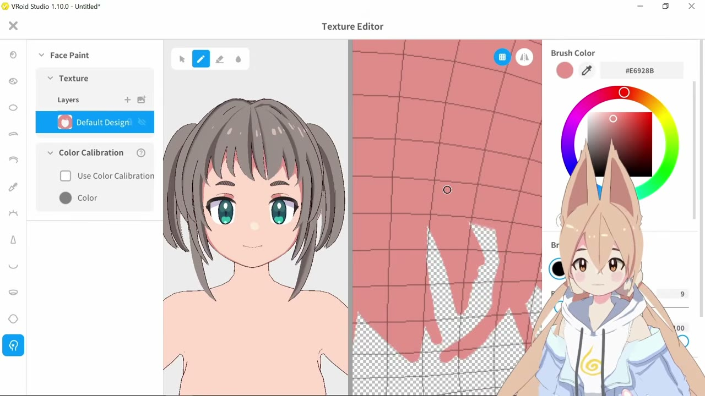
同一支浅粉继续画到头的侧面。笔收到更小，第二格仍是 100。UV 上的粉块边缘是折线，一块一块的，不是柔边。正面这一帧几乎看不出新的阴影，因为画的是侧面那一块网格。口播中间有一段是在擦、再重画，这一帧工具栏亮着的是笔刷，不是橡皮。
脖子补一笔
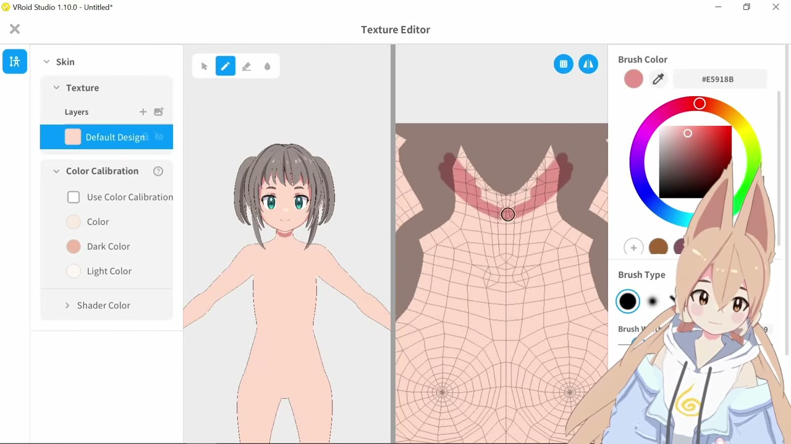
口播说接下来画后颈那一小块，再用普通肤色把线对上。这一帧回到身体皮肤贴图，在下巴下方的脖子 UV 上画出一条粉边，色号 #E5918B，和脸上的 #E6928B 很接近，但不是同一个数。校色仍然没勾。用肤色改回去的那一下，这一帧还没发生。
看收好的脸
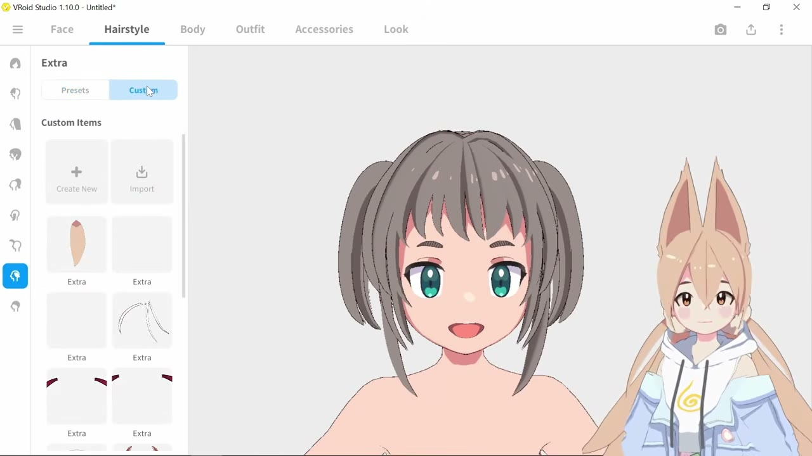
头发、眼睛和手绘暗部放在一起看：刘海压在眉上，发际有一圈浅粉，不是 Look 里那种大块自动阴影。口播说这样就已经像完成的赛璐璐，而且没有进 Blender。画面停在发型的 Extra 页，没有打开导出。